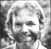

In 1976, Tom Ferguson - then a fourth-year medical student at Yale - launched a magazine called Medical Self-Care ... which - he hoped - would serve as "a Whole Earth Catalog of the best medical books, tools, and resources".
Tom spoke of his plans for the publication - and of his conviction that self-care could raise the general level of health in this country and lower our inflated levels of medical spending - in the Plowboy interview in MOTHER NO. 51 ... and left no doubt that he would work toward making those "dreams" come true.
Well, Tom Ferguson is Doctor Ferguson now, and the medical self-care "movement" - as well as Tom's magazine - has flourished. People are beginning to assume more responsibility for their own well-being and are eager for information that will help them take better care of their bodies.
So - to continue to provide just such very necessary data - THE Mother Earth News (restricted) is going to offer as a regular feature a piece by Tom Ferguson, M.D., called (what else?) "Medical Self-Care".
Back in my early days on the hospital wards, I was shocked by the numbers of people who were suffering (and dying!) from preventable diseases. I felt that our culture-by not teaching things like relaxation, exercise, diet, and so forth-had let those men and women down ... and would continue to let down generation after generation of children, unless our youngsters could be taught to take care of their bodies.
So, when I later had the opportunity to devote several months to an M.D. thesis project, I decided to set up a "good example" class to teach medical skills to first graders. The regular instructors in my "target" school were enthusiastic about the program, and soon three coworkers and I had arranged to work with eight children-for two afternoons each week-over a two-month period.
The teachers suggested that we explore areas that the children wanted to learn about, rather than coming in with a prepackaged set of goals. So we opened up the session with this loose definition of the class: "This is a time for you to find out about your bodies, about doctors, about what happens when you get sick, and about how to stay healthy. Your 'job' is to think up good questions about health. Our job is to answer whatever questions we can, and help you figure out how to find your own answers to the others.
My co-workers and I were all a little uncertain about our ability to instruct the children in even rudimentary medical skills. One of the myths in our culture is that medical information is so specialized that a little of such knowledge can be terribly dangerous ... and that it's best to leave all the responsibility for "doctoring" to the experts.
In the course of our classroom experiment, however, we discovered that It's all right for people to get together to talk about illnesses and bodies ... even if no one in the gathering is a "pro". You see, one of the most important medical selfcare skills is the ability to pose the right question and then figure out how to find the answer.
We emphasized this sort of self-sufficiency in our classes ... by helping the young students use the library to resolve some of their questions, and take advantage of the other resources that we had available to answer others.
As often as not, our class's questions would lead us into areas of the children's personal fears and concerns. "When my sister had appendicitis, the doctor measured the white cells in her blood, " one of our students told us. "What did he do that for?" We had to respond to such questions both by providing the technical information sought and by easing the unexpressed concern behind the queries ... which was often, "Could the same thing happen to me? "
The children were especially interested in "hands on" activities, and we presented a number of opportunities for them to actually feel, see, and listen to the workings of their bodies. All of our students learned how to take their own pulse readings, for example (we found that the under-the-angle-of-the-jaw carotid pulse was easiest for children to locate). The youngsters also came to understand the significance of such measurements ... by noting the difference in pulse rates before and after a fast run, and that experiment led to a discussion of how physical fitness affects pulse rate: People in better physical condition have stronger hearts and slower pulses, for example.
Since it became apparent early in the class that one stethoscope and eight youngsters would add up to chaos, we obtained an inexpensive "stetho" (at a cost of $2.00 to $5.00) for each of our students. Many good questions and discussions resulted from letting the children try to find different sounds with the tools. (They discovered noises that we teachers had never thought of ... like "my toes wiggling in my shoes" and "my hair".)
Our class discussions often related to the children's concern and sense of helplessness about what actually goes on at the doctor's office or the hospital. We were asked such things as: "What happens when they give you gas in an operation? " and "What happens when an animal dies?" (Questions about sex and death seemed easier for them if discussed in terms of animals.)
In responding to the children's worries, we tried to help the youngsters explore the feelings that such questions expressed ... although it was hard for us to remember that our students often didn't want specifically correct information so much as a chance to share deeply felt concerns.
Our schedule limited us to one field trip I though I'd suggest that anyone else conducting such a "special health class" take more excursions ... perhaps to a newborn nursery, a children's ward, or a pediatrician's office). Our group was offered a choice for their one outing, how ever, and made what turned out to be an excellent decision: They chose to visit an animal hospital. We got a tour of the operating room, a description of common surgical procedures, and-the real hit of the day-a demonstration of dog and cat X-rays. The latter fascinated the children (and helped them understand how their own "insides" work) ... we had to just about drag them away.
Independent (but supervised) student projects-such as finding out what different bones look like, or how to use a microscope-also proved to be worthwhile learning tools. In most cases these involved the students in working in the library-and with the instructors-to put together handlettered and hand-drawn "books" on a chosen topic. Again, such activities served to stress the point that "plain people" can look for-and often find-the answers to "complicated" medical questions.
After the classes were over (naturally), we thought of all kinds of wonderful things that could have been done. For example, we might have pointed out bad health habits with a game called "Make Yourself Sick" . . . in which each child would try to think of ways to make his or her health worse. (Good habits would then, of course, be emphasized by contrast.) We should also have included some means of evaluating the class. Perhaps a "draw the inside of your body" test or a "how you feel about doctors" questionnaire-if the latter were given before and after the course-would have been helpful in determining the value of our experiment.
Of course, "special classes" can only reach a few youngsters over a short period of time. What children need is a continuing health focus ... in their daily school schedules and in the home. If we can find ways to develop a regular program of medical awareness and selfcare for our youngsters, we'll be helping to build a future world of healthier adults.
EDITOR'S NOTE: Tom Ferguson's quarterly periodical, Medical Self-Care (P.O. Box 717, Inverness, California 94937) is available at the following rates: $10 for one year, $25 for three years, and $250 for a lifetime subscription. Back issues of the magazine (five of which are currently available) are sold for $2.50 apiece.
And MOTHER NO. 51 - which contains the Plowboy Interview with Dr. Ferguson - is available (for $3.00 plus $1.00 shipping and handling) from THE Mother Earth News (restricted) P. O. Box 70, Hendersonville, North Carolina 28739.
|
 |
|
|